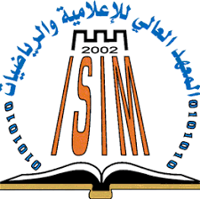
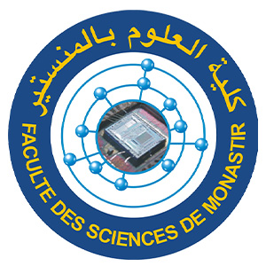

Fax : 70 011 959
Fax: 73 500 278

Fax: 73 500 512


Fax: 73 500 514

Fax: 73 461 150
| Etablissement | Logo | Address | Contact | |
|---|---|---|---|---|
| Institut Supérieur d'Informatique et des Mathématiques de Monastir(ISIMM) |  | Avenue de la Corniche, Monastir 5000 Tunisie | isimm@isimm.rnu.tn | Tel: 70 011 920 Fax : 70 011 959 |
| Faculté des Sciences de Monastir (FSM) |  | Avenue de l'environnement 5019 Monastir -TUNISIE | email2@example.com | Tel: 73 500 276 Fax: 73 500 278 |
| Institut Préparatoire aux Etudes d'Ingénieur de Monastir (IPEIM) | |
Rue Ibn Eljazzar - 5019 Monastir - | ipeim@ipeim.rnu.tn | Tel: 73 500 273 Fax: 73 500 512 |
| Faculté de Médecine de Monastir (FMM) | |
Avenue Avicenne - 5019 Monastir | fmm@fmm.rnu.tn | Tel: 73 462 200 |
| Ecole Nationale d'Ingénieurs de Monastir (ENIM) | |
Avenue Ibn El Jazzar - 5019 Monastir | enim@enim.rnu.tn | Tel: 73 500 511 Fax: 73 500 514 |
| Faculté de Médecine Dontaire de Monastir (FMDM) | |
Avenue Avicenne - 5019 Monastir | fmdm@fmdm.rnu.tn | Tel: 73 460 832 Fax: 73 461 150 |